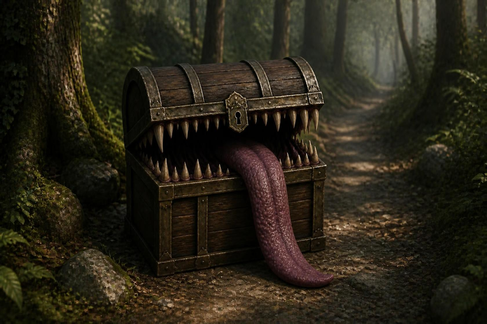

As you step off the path and approach the abandoned treasure chest, excitement begins to build. The chest appears completely ordinary, with weathered wood, rusted iron bands, and a heavy lid that has remained closed for who knows how long. Visions of gold, jewels, and forgotten relics race through your mind as you reach out to claim your prize. The instant your hand touches the chest, it suddenly shudders. The lid snaps open, revealing rows of jagged teeth where treasure should have been. A long tongue lashes out as the chest unfolds into a horrifying mimic, its wooden panels twisting into limbs and claws. Before you can retreat, the creature lunges forward, proving that the greatest dangers are often disguised as the things we desire most. The mimic settles back into place after its attack, once again appearing as nothing more than an ordinary treasure chest, patiently awaiting its next curious victim.